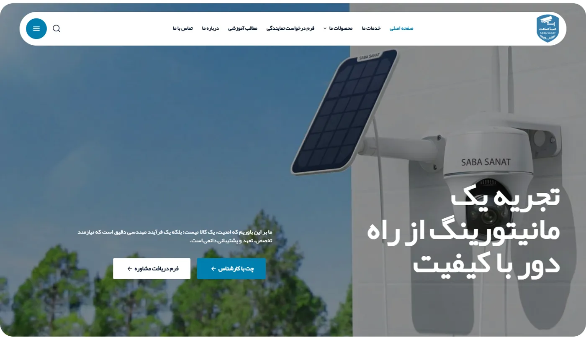
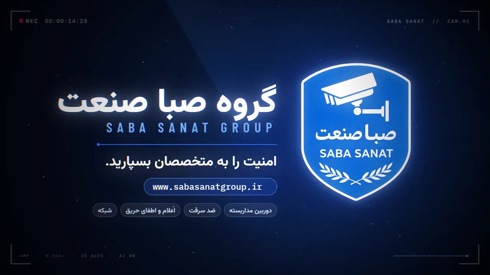
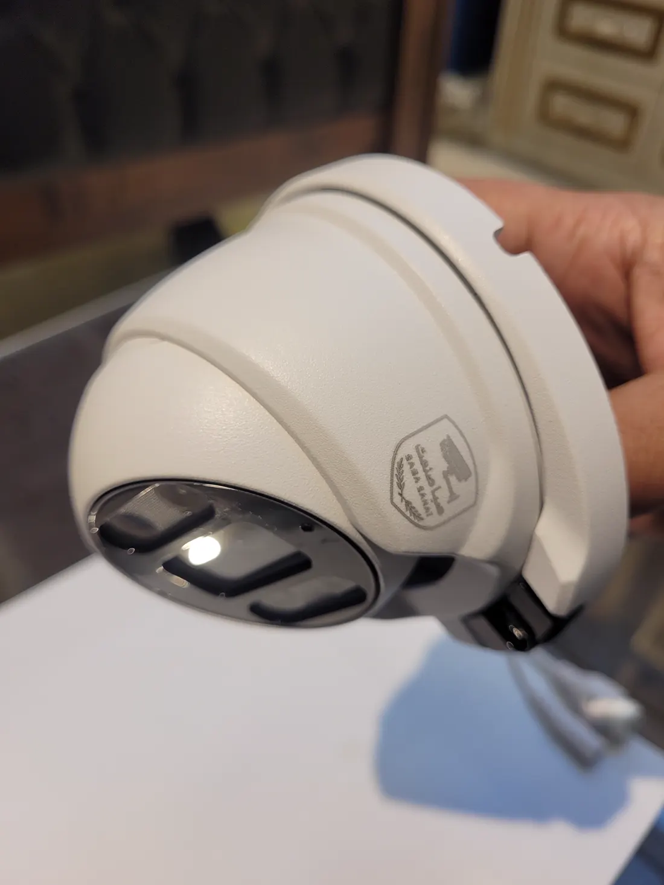

برنامهریزی و آمار
آستان قدس رضوی · کارشناس برنامهریزی
تدوین شاخصهای ارزیابی عملکرد، فرآیندهای برنامهریزی کلان و تحلیل مصور دادههای سازمانی.
رزومهٔ حرفهای مشهد، ایران
مدیر برنامهریزی، تحلیلگر آماری و مشاور ارشد رسانههای دیجیتال
تلفیق تفکر تحلیلی آماری با هنر گرافیک، تدوین و هوش مصنوعی برای ارتقای فرآیندهای مدرن سازمانی، با بیش از ۱۵ سال سابقهٔ فعالیت در سازمانهای حاکمیتی و بخش خصوصی.
۰۱درباره من
من بهعنوان مدیر و کارشناس ارشد برنامهریزی و تحلیلگر آماری، سابقهٔ گستردهای در سازمانهای بزرگ شهری و حاکمیتی دارم. ویژگی متمایز من، توانایی تلفیق ابزارهای پیشرفتهٔ گرافیک، تدوین و هوش مصنوعی با تحلیلهای آماری دقیق است.
در حوزههای هوشمندسازی، مدیریت کیفیت و سیستمهای امنیتی (بهویژه در گروه صبا صنعت)، راهکارهای نوین بصری و اتوماسیون هوشمند را پیادهسازی کردهام تا بهرهوری سازمانی را به حداکثر برسانم.
شاخصهای عملکرد، برنامهریزی راهبردی، تحلیل داده و مدیریت کیفیت.
طراحی و اجرای سامانههای دوربین مداربستهٔ تحت شبکه و اتاق مانیتورینگ.
هویت بصری، تدوین و تیزر، ایجنتهای هوشمند و اتوماسیون.
۰۲پروژهها
نمونههایی از کار در برنامهریزی، آمار، نظارت تصویری، رسانه و هوش مصنوعی. نام برخی کارفرمایان بهدلیل محرمانگی ذکر نشده است.
برنامهریزی و آمار
آستان قدس رضوی · کارشناس برنامهریزی
تدوین شاخصهای ارزیابی عملکرد، فرآیندهای برنامهریزی کلان و تحلیل مصور دادههای سازمانی.
نظارت تصویری
گروه صبا صنعت · مشهد
طراحی، اجرا و پشتیبانی شبکهٔ دوربینهای نظارتی برای پوشش فضاهای یک مجموعهٔ ورزشی-تفریحی.

رسانه و برند
sabasanatgroup.ir · محتوا، عکاسی و مدیریت
تولید محتوای معرفی محصولات و مطالب آموزشی، عکاسی محصول و مدیریت کاتالوگ وبسایت شرکت.

رسانه و برند
گروه صبا صنعت · مشاور هنری
بازطراحی نشان شرکت و نشان محصول، و ساخت تیزر موشنگرافیک و ریلز عمودی برای شبکههای اجتماعی.
برنامهریزی و آمار
شرکت سرمایهگذاری ستاوند – شهرداری منطقهٔ دو مشهد
برنامهریزی و آمار
شرکت بهرهبرداری قطار شهری مشهد
مدیریت کیفیت
شهرداری منطقهٔ ۷ مشهد

نظارت تصویری
گروه صبا صنعت
دوربینهای IP و AHD و دستگاههای ضبط NVR/DVR با نشان اختصاصی؛ از معرفی فنی تا اجرای پروژه.
هوش مصنوعی
پروژههای مستقل و سازمانی
طراحی ایجنتهای اختصاصی و چندعاملی بر پایهٔ مدلهای زبانی برای خودکارسازی کارهای اداری و تولید محتوا.
۰۳سوابق
از برنامهریزی شهری و آمار تا مهندسی سامانههای حفاظتی و رسانهٔ دیجیتال.
مدیریت هویت بصری برند، نظارت بر کمپینهای محتوایی و اجرای شبکههای نظارت تصویری هوشمند بر پایهٔ پردازش تصویر.
تدوین شاخصهای ارزیابی عملکرد، فرآیندهای برنامهریزی کلان و تحلیل مصور دادههای سازمانی.
مدیریت استراتژیک و برنامهریزی عملیاتی در سطح منطقهٔ شهری.
تحلیل دادههای کلان شهری و توسعهٔ سیستمهای اطلاعاتی سازمان فاوا.
پیادهسازی نظام آراستگی (5S) و مستندسازی استانداردهای اداری.
ارائهٔ مشاورههای تخصصی آماری برای بهینهسازی عملیات حملونقل شهری.
تدریس آمار، ریاضی، نرمافزارهای تحلیلی، تولید محتوای دیجیتال و هوش مصنوعی مولد.
۰۴تخصصها
۰۵تحصیلات
دانشگاه پیام نور مشهد
دانشگاه فردوسی مشهد
دانشگاه پیام نور · آمار، نرمافزارهای تحلیلی و هوش مصنوعی مولد
۰۶خدمات
مدیریت چرخهٔ داده، داشبوردسازی راهبردی و استقرار استانداردهای ایزو و نظام آراستگی 5S.
مهندسی، تأمین و اجرای شبکههای نظارت تصویری (CCTV) مجهز به تحلیل هوشمند تصاویر (صبا صنعت).
مشاورهٔ برندینگ، طراحی هویت بصری، سناریونویسی و تدوین حرفهای ویدیوهای معرفی دستاوردها و تیزرهای صنعتی.
استقرار مدلهای هوش مصنوعی و طراحی ایجنتهای اختصاصی برای اتوماسیون کارهای اداری و تولید محتوای هوشمند.
۰۷تماس
برای مشاوره، پروژه یا دعوت به تدریس؛ سریعترین راه، تماس تلفنی یا پیام است.